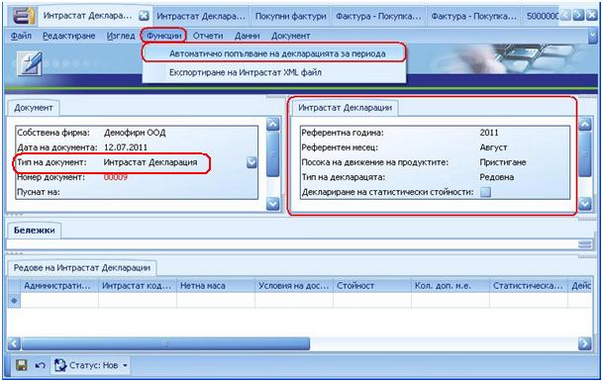
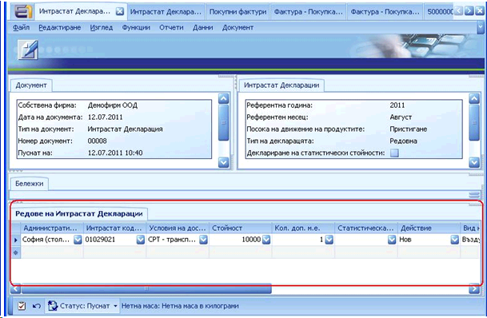
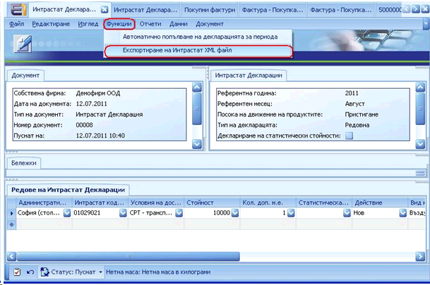

Генериране и Експортиране на Интрастат Декларация
Когато всички необходими документи са попълнени, можем да създадем Интрастат Декларация. За примера ще изготвим Интрастат Декларация за Пристигания:
Създаване на Интрастат Декларация
Главно меню >> Финанси >> Интрастат >> Създаване на Интрастат Декларация
В панел Документ се попълва поле Тип на документ. Останалите полета се попълват автоматично. В панел Интрастат Декларация, е необходимо да се попълнят следните полета:
- Референтна година - годината, за която е подготвена декларацията
- Референтен месец – месецът, за който е подготвена декларацията
- Посока на движение на продуктите – в случая е Пристигане
- Тип на декларацията – определя дали декларацията е редовна или коригираща
- Пощенски код – пощенски код на подаващия декларацията
След като полетата в панел Интрастат Декларация са попълнени, от меню Функции се избира „Автоматично попълване на декларация за периода”. След тази стъпка, панел Редове на Интрастат Декларации ще бъде автоматично попълнен с Интрастат данни, от всички попълнени документи преди това (Доставчик, Продукт, Покупна Фактура).

В случай че полетата за Интрастат декларацията не са били попълнени в необходимите документи, има възможност те да се попълнят ръчно в панел Редове на Интрастат Декларации непосредствено преди самото й генериране.

Пуснете документа.
Експортиране на Интрастат Декларация
За да експортирате готовата Интрастат Декларация, отидете отново на меню Функции и изберете „Експортиране на Интрастат XML файл” - формат**,** съвместим с Уеб приложението на НАП.

Изберете къде искате да бъде запазен файлът, който ще подадете в НАП.